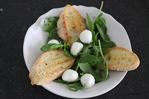

Een salade van knapperig geroosterd brood met gemarineerde tomaatjes.
Ingrediënten
75 gr rucola
6 rijpe tomaten
12 sneetjes gegrild brood met knoflook
verse basilicum
1 teentje knoflook
1 zakje mini mozzarella balletjes
1 eetlepel olijfolie (+ extra om te bestrijken)
1 eetlepel balsamico azijn
2 eetlepels pijnboompitten (geroosterd)
Bereidingswijze
Snijd de tomaten in vieren en verwijder de pitjes en het waterige gedeelte.
Snijd de rest in blokjes. Doe deze in een bakje met wat fijngesneden basilicum, eetlepel olijfolie, balsamico azijn en snufje peper en zout. Dek af en zet dit apart.
Bestrijk de sneetjes brood met een beetje olijfolie.
Grill ze in een grillpan of tosti ijzer krokant. Wrijf ze daarna in met een teentje knoflook.
Verdeel de sla over borden of kommen. Steek hier de stukjes gegrild brood in en verdeel de balletjes mozzarella hierover. Schep de tomatensalsa er in het midden op. Bestrooi met wat pijnboompitten en extra basilicum.

Tip Roma tomaten en Ciabatta stokbrood smaken het beste.